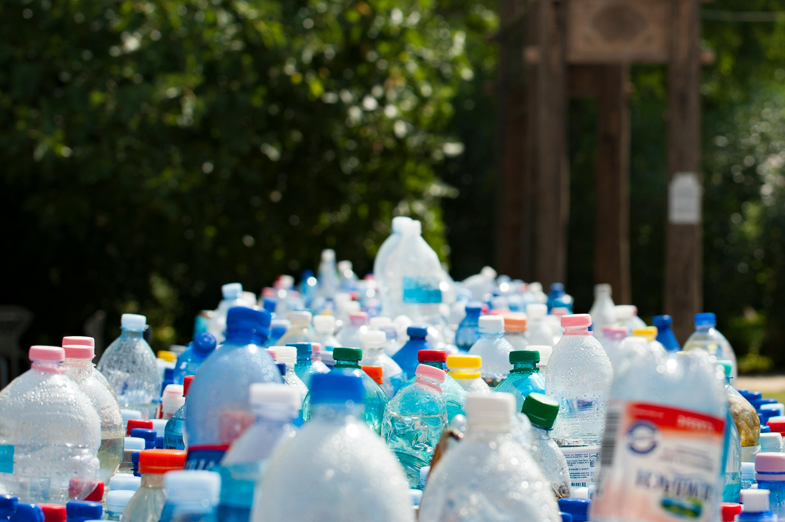

Ensalada de Frutas Frescas
Ingredientes:
- Manzana
- Plátano
- Fresas
- Uvas
- Yogur natural
Preparación:
Corta todas las frutas en trozos pequeños, mézclalas en un tazón grande y añade yogur natural al gusto. ¡Disfruta de una merienda saludable y deliciosa!

Esta pagina web esta enfoctada en conocer las consecuencias de consumir pruductos chatarra, procesados, tanto concecuencias para tu cuerpo como ambientales.pagina enfocada en el cuidado de la salud y el medioambiente
Conoce la cantidad de basura generada en nuestra escuela y el impacto que tiene en el medio ambiente. Incluir información investigada
Descubre los beneficios de una alimentación saludable y cómo puede mejorar tu vida y el medio ambiente.
Un juego del Centro de Educaci[on de las Ciencias del Smithsonian para aprender a construir platillos saludables usando las guías nutricionales de distintos lugares del mundo.
Un juego sencillo de empatar parejas.
Un juego de arrastrar objetos para aprender sobre los gurpos alimenticios.
| Consejo | Descripción |
|---|---|
| Usa botellas/vasos reutilizables | Ahorra dinero y reduce la basura usando botellas y vasos reutilizables en lugar de los desechables. |
| Usa bolsas de compras reutilizables | Lleva siempre bolsas reutilizables para reducir el uso de bolsas plásticas. |
| Compra con inteligencia y recicla | Elige productos con menos empaques y verifica la reciclabilidad de los materiales. |
| ¡A compostar! | Composta restos de comida y desechos de mascotas para reducir residuos y enriquecer tu jardín. |
| Evita contenedores y cubiertos de un solo uso | Usa utensilios reutilizables para reducir el uso de productos desechables. |
| Compra artículos de segunda mano | Ahorra dinero y apoya a organizaciones benéficas comprando productos usados. |
| Compra en mercados locales y a granel | Apoya la producción local y reduce el uso de empaques comprando a granel. |
| Disminuye tu uso de papel | Pide tickets y facturas digitales para reducir el consumo de papel. |
Corta todas las frutas en trozos pequeños, mézclalas en un tazón grande y añade yogur natural al gusto. ¡Disfruta de una merienda saludable y deliciosa!
Precalienta el horno a 190°C. Frota Sriracha por todas las pechugas de pollo y colócalas en una fuente de horno con borde. Rocíalas con aceite de oliva, espolvoréalas con sal y semillas de sésamo tostadas y ásalas durante 10-15 minutos. Unta el pollo asado con el jugo de la cocción y servir con verduras al vapor y cuscús o arroz.
Prepara el té verde poniendo a hervir 500 ml de agua. En el momento en el que el agua vaya a romper a hervir, lo retiras del fuego y añades 2 cucharaditas rasas de té verde. Tapa el cazo y deja reposar 10 minutos.Filtras el té y lo echas en una jarra. Con limón, jengibre y hierbabuena.
Endulza con dos o tres hojas de stevia picaditas o con el endulzante que desees hasta que tenga un sabor de tu gusto.